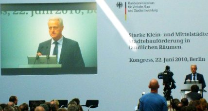
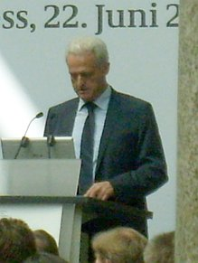
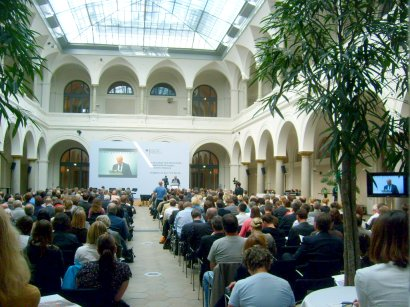

Weitere Datenübertragung Ihres Webseitenbesuchs an Google durch ein Opt-Out-Cookie stoppen - Klick!
Stop transferring your visit data to Google by a Opt-Out-Cookie - click!: Stop Google Analytics
Cookie Info. Datenschutzerklärung

 Altbau und Denkmalpflege Informationen - Startseite / Impressum
Altbau und Denkmalpflege Informationen - Startseite / Impressum
Inhaltsverzeichnis - Sitemap - über 1.500 Druckseiten unabhängige Bauinformationen
Die härtesten Bücher gegen den Klimabetrug - Kurz + deftig rezensiert +++
Bau- und Fachwerkbücher - Knapp + (teils) kritisch rezensiert
Auslandskredit ohne Schufa - Wie, wieviel, was und wo - Tipps und Risiken
Singles - Treff und Dating im Altbau - 12 nicht ganz ernst gemeinte Tipps - oder doch?
Tips zur Finanzierung +++
Erfolgreich Instandsetzen +++
Für Bauherren und Baufachleute: Tagesseminare bundesweit
Wie gründet man ein Museum? 25 erprobte Praxistips um den Dachboden zu leeren und den Gemeindekämmerer zu ruinieren
Planen+Bauen, Kostenexplosionen+Korruption
Kostengünstiges Instandsetzen von Burgen, Schlössern, Herrenhäusern, Villen - Ratgeber zu Kauf, Finanzierung, Planung (PDF eBook)
Altbauten kostengünstig sanieren:
Heiße Tipps gegen Sanierpfusch im bestimmt frechsten Baubuch aller Zeiten (PDF eBook + Druckversion)

Konrad Fischer
Die Wirtschaftlichkeitsberechnung als Planungsgrundlage der Altbausanierung 13
Seite 1 2 3 4
5 6 7 8
9 10 11 12
13 14
Zwei heiße Tips für die Kollegen zum Schluß:
1. Weist die überschlägige Kostenermittlung das angemessene Planungshonorar für zu erwartende Grund- und Bes. Leistungen aus,
kostet das Berechnungsaufwand und weckt die Bereitschaft der sonstigen Beteiligten, angesichts erkannter Finanzierungslücken unsinnigerweise am Planungshonorar
zu sparen - mit allen zulässigen und unzulässigen Folgen. Unerfahrene Bauherren kennen leider nur eines: Saving the penny and losing the pound.
Ist das Vertrauen in die Standfestigkeit und Einsicht des Vertragspartners und die Einsicht und Fairness der beteiligten Förderinstitutionen nicht 150%, am
Anfang lieber eine angemessene Summe der Gesamtbaukosten ohne weitere Aufschlüsselung vorlegen (interne Vorkalkulationen des Honorarvolumens empfehlenswert,
weckt die Einsicht in das Problem der weiteren Vertragsverhandlung, erforderliche Besondere Leistungen z.B. für Bestandsaufnahme, Schutz des Bestands und
mitverwendete Bausubstanz rechtzeitig berücksichtigen!).
Das kostet natürlich zunächst nicht das volle Vorplanungshonorar (wg. Honorardegression/evtl. HOAI-Novelle gerade günstig bei späterer Bauabschnittsbildung,
dort kann "aufgeholt" werden), stärkt aber die Vertragsbindung bis zur -fortsetzung nach gelungener Finanzierung. Danach wirkt hoffentlich Tip 5 i.V.m. Gottes
Hilfe.
Sowieso kann wirtschaftliches Bauen nur gelingen, wenn die Planung verschärften Anforderungen genügt. Mit Honorarzone 0 Mindestsatz ist Bauen
ohne sinnlose Kosten nicht zu haben. Altbausanierung unter vergleichbaren Neubaukosten setzt ausreichende Bestandsaufnahme, VOB-gerechte Ausschreibung und
damit marktgerechte und nachtragsarme Baudurchführung voraus. Die heimliche Verwendung von Firmen-LV´s, unvollständige und
mangelhafte Planung mit der Hoffnung, honorarmäßig sogar an den dadurch steigenden Baukosten noch zu profitieren, dies aber zu Mindestmindesthonorarsätzen,
klappt inzwischen wohl nur noch bei den allerdümmsten Bauherren, ohne im Architektenprozeß zu enden...
2. Unbedingt erforderlich, um große Enttäuschungen rechtzeitig zu vermeiden:
- Erst Vertragsabschluß, dann Leistung!
- Erst bezahlte Zwischenrechnung, dann Auslieferung der wesentlichen Arbeitsergebnisse!
VIEL GLÜCK!
Ein kleines Extrazuckerli (Bilder: Konrad Fischer):
Kongress im Bundesministerium für Verkehr, Bau und Stadtentwicklung in Berlin 22.06.10
Starke Klein- und Mittelstädte: Städtebauförderung in ländlichen Räumen

Der Bundesbauminister rief und viele, viele kamen. Vor allem kommunales Zubehör,
städtebauförderungserfahrene Planer, und die schönen Sanierungsträger, ohne deren kräftiges
Abgreifen der Fördermittel ja die Städtebauförderung (SBF) hierzulande kaum vorstellbar
erscheint. Man wollte ja wissen, was sich nun tut, nach der Verkündigung des Bauministers, ca. 50
Prozent der Städtebaufördermittel des Bundes dank Griechenland usw. ersatzlos zu streichen. Prima,
so macht Sparen Spaß. Und jeder weiß, wie sich das auswirken wird auf die kommunalen Befindlichkeiten
landauf und -ab. Unendlich viel Baukorruption inklusive. Am 7. Juli kam es zum Kabinettsbeschluß betr.
Entwurf des Bundeshausshalts 2011 und Finanzplan bis 2014. Als Schuldenbremse wurden u.a. die Mittel des
Bundeszuschusses zur KfW-Förderung von 1,35 Milliarden Euro auf 450 Millionen Euro eingedampft werden, und die
Städtebauförderung (2009: 569 Millionen Euro, 2010: 535 Millionen Euro) auf 305 Mio Euro für 2011
zusammengeschnurrt / gekürzt / zusammengezwickt. Typisch für die Vertrauenswürdigkeit unserer Staatslenker,
hieß es doch im Koalitionsvertrag 2009 noch so schön begeisternd: "Die Städtebauförderung leistet
einen unverzichtbaren Beitrag zur lebenswerten Gestaltung von Städten und Gemeinden. Wir werden die
Städtebauförderung als gemeinschaftliche Aufgabe von Bund, Ländern und Kommunen auf bisherigem Niveau,
aber flexibler fortführen." Da werden die üblichen "Vergünstigungen" unter so manchen Beteiligten
der SBF-Abwicklung aber erst mal auf kleiner Flamme weiterzukochen sein, gell. Oder
jetzt - angesichts der Mittelauszehrung - erst recht? Nowbody knows, und alles hängt ja noch von der
im Herbst erwarteten endgültigen Spar-Entscheidung des Bundesparlaments ab - Lobbyisten, jetzt aber hurtig!
Und auch die Planungs- und Managementressourcen zittern und zagen - müssen sie jetzt auch zur Hälfte
schrumpfen? Wie schön, daß da dieser Kongreß stattfand, um ein gaaanz neues Projekt in die Welt
zu posaunen: Die ländlichen Städtlein und Kommunen sollen sich künftig um die verknappsten
Mittel mittels Kooperationsprojekte bewerben (das Schlottern und Knieklappern der Teilnehmerschar
hätten Sie hören und sehen sollen!). [Nachtrag 15.11.2010: Nach dem ritualisierten Gejammer der üblichen
Verdächtigen hat sich der Haushaltsausschuß eines anderen besonnen: Die Kürzung erfolgt dann doch "nur"
auf 455 Millionen]:
Wo eh nix mehr ist, sollen folglich nur noch größere Einheiten bedient werden. Das erhöht die Fördereffizienz. Und
so kürzt man einerseits um hunderte Millionen, um dann ein zweistelliges neues Förderprogramm stolz hinauszuposaunen. Daß
anderswo - will sagen im Klimakampf gegen den CO2-Popanz rund um Elektromobilität und sonstige staatlich-lobbymäßig
induzierte Ökoschmarotzerei - die Klimaschwindel-Millionen umso kräftiger weitersprudeln, wollte erst mal
niemand laut sagen. Das passiert dann hinter verdruckst vorgehaltener Hand.
Natürlich bin auch ich da hingefahren, nicht um zu sehen und gesehen zu werden (wer kennt mich
schon in diesen Kreisen?), sondern um meine Homepage mit möglichst authentischem Material aus
direkter Quelle anzureichern. Was tut man nicht alles für seine Leser?! Und so haben Sie nun das
Vergnügen (?), die Statements aus der Szene in einer arg gekürzten stichpunktartigen
Zusammenfassung des Eintagesseminars beim Bauminister hier zu lesen. Frech gewürzt mit kleinen
Sottisen des Berichterstatters in den [KF: Klammern]. Das kann ich Ihnen nicht ersparen. Im "Zitat"
die wortwörtliche Mitschrift der Verlautbarungen der Vortragenden. Ansonsten sinngemäß eingedampft.
Jetzt geht's los:

1. Dr. Peter Ramsauer, CSU-Bundesminister für
Verkehr, Bau und Stadtentwicklung, "Perspektiven der Städtebauförderung in ländlichen Räumen": 18 Millionen
für neues Städtebauförderprogramm "Kleinere Städte und Gemeinden - Überörtliche Zusammenarbeit und Netzwerke"
bereitgestellt, da diese bisher von der Städtebauförderung und besonders im Westen - wo überhaupt nur 28
Prozent der Städte und Gemeinden gefördert wurden, gegenüber 86 Prozent in den "Neuen Ländern"! - nahezu total
vernachlässigt wurden [KF, Wessidörfler: Ach wie toll, toll, toll!!!] - hier zur detaillierten Analyse des
Bundesinstituts für Bau- Stadt und Raumforschung: 'Die
Städtebauförderungsdatenbank des BBSR, Programmstruktur und Fördermitteleinsatzseit der Deutschen Einheit'.
Andererseits sind einschneidende Sparmaßnahmen bei allen
Städtebauförderungsprogrammen bzw. Bauzuschußprogrammen (Soziale Stadt, Stadtumbau West und Stadtumbau Ost,
Sanierung und Entwicklung West und Sanierung und Entwicklung Ost, Zentrenprogramm, Städtebaulicher
Denkmalschutz sowie Energetische Gebäudesanierung, CO2-Gebäudesanierungsprogramm) im Zusammenhang mit dem
Sparpaket der Bundesregierung unausweichlich. EU-Mittel müssen in ländlichen Räumen verstärkt beansprucht
werden [KF: Aha, das ist die Lösung in Zeiten der Perspektivlosigkeit! Merkwürdig, daß wir da nicht selbst
draufgekommen sind, wo es doch immer so einfach ist, die wunderlichsten Förderprogramme mit ihren
Ausschlußklauseln und sich widersprechenden Förderzielen unter einen Hut zu bringen! Und schlauerweise
hat man dafür ja gleich den Förderboss Dr. Schweizer vom Bauernministerium mit aufs Podium eingeladen,
s.u.. Der weiß ja, wie das geht. Und dem kann man vielleicht was aus seinem prallen Beutel
(Dorferneuerung / Dorferneuerungsprogramm, Ziel-5b-Mittel, EU-Strukturfonds, Zuschüsse der sogenannten
Gemeinschaftsaufgabe "Verbesserung der Agrarstruktur" / "Dorferneuerung" / GA-Mittel) abzwacken, ob
er den feisten Schweinebraten gerochen hat??? Wobei angesichts des
Energiesparschwindels mit unwirksamer / unwirtschaftlicher Gebäudedämmung und der
steuergeldinduzierten Ökoabzocke eine Totaleinstampfung der sog.
"Energetischen Gebäudesanierung" uneingeschränkt zu begrüßen wäre. Doch das wäre ja vernünftig
und ist genau deswegen vielleicht nicht von unserer Regierung zu erwarten.].
2. Günter Kozlowski, Staatssekretär im Ministerium für Bauen und Verkehr des Landes
Nordrhein-Westfalen: "Die Sicht der Länder" (Wörtliche Übernahme des Beitrags seines
verhinderten Vorgesetzten, Bauminister NRW Lutz Lienenkämper): Gleichwertige - nicht identische
- Lebensverhältnisse an jedem Ort ist Leitbild. Abwanderung stoppen als Aufgabe auch der SBF
[KF: Aha].
3. Dr. Hans-Peter Gatzweiler, Bundesinstitut für Bau-, Stadt- und Raumforschung im Bundesamt
für Bauwesen und Raumordnung, "Städtebauliche Herausforderungen in ländlichen Räumen": 1/3
aller Kommunen (Städte und Gemeinden) schrumpfen. Demographischer Wandel. Besondere Probleme
für überalternde - etwa 50 Prozent aller ländlichen - Kleinstädte und Gemeinden. Sie haben
weniger Infrastruktur in jeder Hinsicht (Versorgung, Dienstleistungen, ...) als wachsende
Kommunen. Notwendigkeit interkommunaler Kooperationen. Bündelung der Fördermöglichkeiten
verbessern, - das "Gebot der Stunde", "politische Bringschuld von Bund und Ländern"[KF: Wer
hätte das gedacht?!].
4. Dr. Sonja Beeck, IBA-Büro GbR, Sachsen-Anhalt (S-A), "Stärken von Klein- und Mittelstädten:
Eindrücke von der Internationalen Bauausstellung Stadtumbau Sachsen-Anhalt 2010": Städte sind
Kernfunktionen nach allerlei Gesichtspunkten. Allerlei IBA-Beispiele städtebaulicher Projekte.
Aschersleben: Drive-through-Galerie mit dollen Kunschtwärgen verdecken häßliche Abbruchlücken
und städtebauliche Mißstände [KF: Potemkinsches Dorfprojekt anno dunnemals ein Dreck dagegen?].
Dessau: Allerlei Landschaftsgärtnerei [KF: Vegetationsinseln, verunkrautete Dschungelei, was
sagen da die Bürger?!] zwischen Problemquartieren und auf Abbruchquartieren (KF: Natur erobert
Baugrundstücke zurück). Freiflächenclaims für Bürger zum Grillen [KF: Ossi-Schrebergarten 2.0?].
"Wenn Nutzung fehlt, muß über Inhalte nachgedacht werden". Bernburg: Drei Schulen geschlossen,
eine neu gebaut. Einbeziehung verschiedener Träger in Bildungsinstitutionen. Das ist
Bildungsoffensive. Wittenberg: Campus Wittenberg e.V. gegen Phantomschmerz Uniabwanderung im 19.
Jh. Aus Ruine Franziskanerkloster Seminarzentrum. Stadtverwaltung / Archbüro / Kirchengemeinde /
IBA-Büro / Stiftung Luthergedenkstätten SA/ ... als Partner in IBA-Projekt.Wittenberg:
Dreiklassenordnung für Altbaubestand: Abstufung von unbedingter Erhaltung - bis möglichem
Abbruch. Implantatarchitektur auf Abbruchgrundstücken als "intelligentes Konzept" [KF:
Fremdkörperei nach alter Bauhäusler Sitte. Möglichst krasse Plombe!]. Aschersleben:
Kunstprojekte an Problembuden, die weiter dumm rumstehen. Bürgerbeteiligung. Quedlinburg: Bürger
sanieren Altsubstanz [KF: Oho!].
5. Gute Beispiele der Städtebauförderung in Klein- und Mittelstädten im Interview mit Katja
Baumann und Martin Karsten, Kongressbüro FORUM Huebner, Karsten & Partner, Oldenburg:
- Oberbürgermeister Dr. Bernhard Matheis aus der Schuhstadt Pirmasens, Die Revitalisierung von
Industriebrachen und militärischen Liegenschaften: Monostrukturierte Region durch
Auslandsverlagerung der Schuhproduktion stark geschädigt. Schlimm auch der Abzug der
US-Streitkräfte. [KF: Ja, unseren Besatzungstruppen darf man freilich viele Tränen nachweinen.]
Und jetzt: Revitalisierungskonzept sucht Antworten.
- Bürgermeister Franz Stahl, Tirschenreuth, Die Innenstadtentwicklung einer industriell
geprägten Kleinstadt: Städtebauliches Entwicklungskonzept. Jugendlichenbefragung nach
Zukunftsvorstellung. Marktplatzsanierung als Kern der Stadtsanierung. Bahnhofsareal war teils
Brachfläche, wurde von Stadt gekauft und entwickelt. Neubauten verschiedener Verwaltungsgebäude
sollen Areal neu beleben. Gartenschau als Entwicklungsimpuls in Randgebiet. Alte Brauerei
Abbruch [KF: Wie toll, woanders - aber nicht in der materiall und geistig so stark ausgebluteten
Oberpfalz? - hätte man vielleicht was draus gemacht, wenn man schon ein so
schmuckes Industriedenkmal
- das ehemalige Kommunbrauhaus - gehabt hätte!]. Investor baut nun Hotel [KF: Wieviele
Insolvenzen wird es wohl brauchen, bis es auf kleiner Flamme wirtschaftlich läuft?].
Gartenschau lockt Privatinvestoren an. Städtische Initiativen werden durch regionale Verwaltung
(Bezirksregierung) gebremst und blockiert. Bürokratieproblem. Der Bayer Ramsauer soll helfen.
Applaus.
- Baubürgermeister Christian Kuhlmann aus Biberach, Die Sanierung des mittelaletrlichen
Stadtkerns: Zufälle brachten in Nachkriegszeit sich gut entwickelnde Unternehmen, vorher
verschlafenes Nest. Intakte Altstadt ist großer Schatz. Die gut erhaltene Altstadt ist so schön,
schön, schön! Besuchen !! Ortsansässige Firmen haben Eigner und Geschäftsführer, die große
Bindung an Stadt haben. Abbruchlastiges 70er-Jahre-Programm "Autogerechte Stadt" gottseidank
nicht verwirklicht. 50 Prozent der Altstadt stehen unter Denkmalschutz, und das ist auch gut so.
Stadt muß darauf angemessen und positiv reagieren und Ressourcen bereitstellen. Zieljustierung
der städtebaulichen Entwicklung in kurzen Zeiträumen, Nachjustierung! Bürgerbeteiligung kein
Allheilmittel, muß richtig gesteuert werden und angemessen in Wettbewerbsprozesse für
Neugestaltung öffentlicher Räume integriert werden. Stadtbildanalyse landet in
Gestaltungssatzung als Regelung der Neuentwicklung, nicht als Konservierungsvorschrift.
Beispiel C&A-Kaufhaus, moderner Baustil mit historisch verbürgten Elementen in bauhäuslerisch
verschlichteter Neuinterpretation. Bürgermeister macht Stadtführung für Bürger, bei der er auf
historische Architekturdetails hinweist. Problem: Förderschwankungen. Applaus.
- Bürgemeister Werner Suchner aus Calau, Brandenburg, Die Entwicklung eines zentralen
Schulstandortes: Früher Calauer Stiefelproduktion, dann nach dem Krieg vorwiegend
Braunkohlestandort. Nach Grubenschließung starker Bevölkerungsrückgang. Jetzt Entwicklung als
zentraler Schulstandort mit SBF. Sanierung der Schulgebäude mit verschiedenen Förderprogrammen.
[KF: Aha.] Bündelung der Förderprogramm ein bürokratisches Problem.
Gotthard Troll, Bürgermeister der Stadt Lößnitz und Vorsitzender des Städtebundes Silberberg,
Der Städtebund aus fünft Städten und einer Gemeinde: Bis Wende Schuhindustrie, Zusammenbruch
nach Wende Rückbau / Abbruch der angeschwollenen, dann leeren Plattenbauten teils erforderlich.
Gründung Städtebund. Gemeinsamer Flächennutzungsplan. Gemeinsames Sportstättenkonzept. [KF:
Originell!?]
- Bürgermeister Alexander Heppe aus Eschwege, Hessen, Die Stadt-Umland-Kooperation "Mittleres
Werratal" im ländlichen Raum: Koop aus acht Kommunen - Kreisstadt und sieben umliegende
Gemeinden. Koop begünstigt aus gemeinsamer Arbeit im Tourismus. Regionale Arbeitskreise.
Lenkungsgruppe. Gemeinsame Handlungsschwerpunkte in Region: Verwaltungszusammenarbeit,
Wohnungsmarktanpassung. Gewerbeflächenangebot. Tourismus. Lebensmittelgrundversorgung.
Beseitigung Geschäftsleerstand in zentralen Lagen. Stadtumbau West als Hauptförderszenario SBF.
Auch "Soziale Stadt". Impulsprojekt / Beispielprojekt Altes E-Werk als Veranstaltungsbau [KF:
Vgl. hingegen Brauereiabbruch in Tirschenreuth!]. Modellhaus "Musterhaus Wohnen":
Altbausanierung Wanfried. Sanierung eines vergammelten Fachwerkhauses, um Bürgern vorzuführen,
was da so geht. Wohnen soll aber niemand drin. [KF: Idealfall konservierender Denkmalpflege?
Krass!] In Eschwege Altbausanierung Modellhaus "Energiehaus Wohnen". Hier soll ein Fachwerkhaus
vorführen, wie es das Klima rettet. [KF: Maximierung von Energiesparblödsinn durch
Ökoschmarotzerei?] Sanierungsprojekte, die Pilotfunktionen entwickeln sollen. Kritik an
SBF-Programm: Mangelhafte Flexibilität. Fehlende Planungssicherheit mangels klarer /
einheitlicher Förderstrategie in verschiedenen Landesteilen.
6. Aufgaben der Städtebauförderung in ländlichen Räumen und das neu Programm "Kleinere Städte
und Gemeinden" Podiumsgespräch - Gesamtmoderation: Martin Karsten, Forum, Oldenburg:
Bernd Düsterwieck, Deutscher Städte- und Gemeindebund: Aktuelle Kürzung SBF um 50 Prozent aus
kommunaler Sicht eine Katastrophe. Schlag ins Kontor. 1 EUR generiert bis zu 8 EUR als
Konjunkturprogramm im besten Sinne. SBF müßte auf hohem Niveau konsolidiert werden. Heftiger
Widerstand der Bundesländer gegen Kürzung ist zu erwarten. Kommunen stehen mit Rücken an der
Wand. Frage: Können denn Projekte aus dem neuen Programm überhaupt umgesetzt werden? Wie geht
es dann Flächengemeinden, können diese gefördert, auch wenn sie nicht "kooperieren"? Private
Anteile sollten verstärkt in kommunalen Anteil einfließen. Viele Optimierungen erforderlich,
auch und gerade bei den bestehenden Programmbestandteilen.

Teilnehmerfragen: Wie sollen bei Mittelkürzung die Mittel aus neuem Programm verteilt werden,
wird auch dieses bald halbiert? Wie kommt man ins Programm? Gibt es kritische Masse der
beteiligten Kommunen? Ist auch Rückbau möglich? Wie gibt es Effizienzgewinn in neuem Programm?
Antwort Referatsleiter Dr. Jochen Lang, Bundesministerium für Verkehr, Bau und Stadtentwicklung:
Kürzung angesichts Finanzkrise leider, leider unvermeidbar. Neuverteilung wird in
Gesprächsrunden festgelegt. Optimierung der SBF muß überlegt werden. Neuprogramm soll nicht
betroffen werden. Auch in Flächengemeinden kann überörtliche Koop im eigenen Gemeindebereich
gefördert werden. Entwicklungskonzepte müssen überörtlich erstellt werden, dann förderfähig,
auch schon Planung. Auch das Management der Kooperation interkommunales Netzwerk. Keine
Größengrenze, vorzugsweise kleinere Kommunen. Leitfaden als Strategiedokument wird erarbeitet,
um Programmziele in Klärungsprozess mit Ländern einzubringen. Neues Programm ist Teil der
Effizienzförderung der SBF. Höherer Ertrag der SBF wird erwartet. Programm ist keine
Investitionsoffensive. Ziel: Entwicklung von überörtlicher Kooperationen. Vorrangig wird
künftig gefördert, wer kooperiert. Benelux-Effekt. Strategische Koordinierung auf Bundesebene
sinnvoll. Beamten sind gefragt, um Programme ausreichend flexibel auszulegen. Bündelung geht
von Kommune aus, auf Bundesebene in interministeriellen Arbeitsgruppen hilfreich unterstützen.
Karl Jasper, Vorsitzender der Fachkommission Städtebau und Ministerium für Bauen und Verkehr des
Landes Nordrhein-Westfalen: Evtl. werden nur noch Programme aus alten Verpflichtungen
abgearbeitet, was schlecht wäre. In Anbetracht der dramatischen Kürzungen wohl eine Neuprojekte
mehr oder nur noch sehr wenige? Keine Einzelmaßnahmen, nur Koop-Projekte. Eventuell Auswirkung
auf vernachlässigte ländliche Gebiete, die als ländlicher Raum aus SBF herausgefallen sind.
(Widerspruch Dr. Schweizer). Länderspezifische Abstimmung der Programminhalte. Förderschwerpunkte
NRW in Kooperationsschwerpunkte (vgl. Werratal), auch in Entwicklung als Kulturregion. SBF als
Impuls für Kommunen, aufeinander zuzugehen. Sachverstand vor Ort / Beratung ist ganz
entscheidend. Auch Grundlevel kommunaler Beteiligung mindestens 10 Prozent muß bestehen bleiben, dürfen
nicht privat ersetzt werden, auch Vorschuß der Gemeinde-Kofinanzierung durch Landesmittel (Finanzausgleich) nur
wie bisher ausnahmsweise, sonst würden SBF-Mittel "ubiquitär" einsetzbar, was ja aus
Grundsatzerwägungen unbedingt zu verhindern ist. [KF: Und warum wohl? Wer hat diese Grundsatzerwägung auf
alleinige Kosten der finanzschwachen Kommunen wohl ersonnen, und warum? Na, hapert's?]
Dr. habil. Dieter Schweizer, Bundesministerium für Ernährung, Landwirtschaft und
Verbraucherschutz: Dorferneuerung und Dorfentwicklung als Strukturhilfe für ländlichen Raum, der
sich schon lange weg von der Agrarnutzung wegentwickelt (Höfesterben). Auch hier Anschubwirkung
1 EUR Dorferneuerung löst 6-8 EUR sonstige Investitionen aus. Milliardenschwere Gesamtförderung
für ländlichen Raum, wenn man alle Förderungen betrachtet. Koop als Genossenschaft schon immer
Praxis im ländlichen Raum. Kommunale Koop selbstverständlich wichtig. Viele wesentliche
Entwicklungsimpulse gehen von Land, nicht nur von Stadt aus. 30 bis 50 Prozent Eigenmittel sind
beste Effizienzgarantie. An Kofinanzierung soll nicht geschraubt werden. GA-Mittel sind auch
knapp. Jedoch immer neue Ansätze fördern, gerade auch um Effizienzsteigerung zu optimieren.
Vorsicht bei enger Programmatik (Scheineboom!). Innovationen fördern! Förderprogrammatik darf
Realismus vor Ort / Vielfalt nicht im Weg stehen. Flexible Programmatik. Nahtlose Ausstrahlung
der neuen SBF in den ländlichen Raum ist anzustreben.
7. Oda Scheidelhuber, Abteilungsleiterin im Bundesministerium für Verkehr, Bau und
Stadtentwicklung, Ausblick: Wir haben ihre Forderungen und ihre Kritik gehört. Wir haben gute
Beispiele gesehen. Interkommunale Zusammenarbeit im ländlichen Raum wird geschehen, auch
notgedrungen. Bisher zu Unrecht vernachlässigt. Das wird sich - auch dank Bauminister Ramsauer
ändern, dem diente dieser Kongreß. Wir sind kein Metropolenministerium, auch wenn es so
erscheint. Neues Programm als neuer Schwerpunkt zur Bewältigung Strukturwandel des ländlichen
Raums. Anfang Juli mit Ländern und kommunalen Spitzenverbände Abstimmung der Folgen der
Kürzungen. Neues Programm soll eher gesteigert werden. Neue Verwaltungsvereinbarung wird
erheblich flexibler als bisher ausgestaltet werden. Mindestanforderungen an das überörtliche
integrierte Entwicklungskonzept wird demnächst festgelegt, Flexibilisierung dann auf
Landesebene und vor Ort. Problem kommunaler Eigenanteil ist sehr gut bekannt, Mindestanteil
muß bleiben. Absenken und Privatmittelersatz des Kommunalanteils nicht immer möglich.
Stiftungen und Privatmittel können dennoch hier und da - vielleicht auch verstärkt - in SBF
integriert werden. Vorfinanzierung des Eigenanteils durch Land auch demnächst besser möglich.
Schrumpfen, aber besser werden. Angemessene Grundversorgung muß auch in ausgedünnten
Landregionen gegeben bleiben. Bessere Öffentlichkeitsarbeit notwendig. Wettbewerb "Menschen und
Erfolge". Ehrenamtleistungen ins Rampenlicht. Vorbildwirkung für Metropolen. Mehr Demut der
Behörden erforderlich. Viele Beispiele für immenses Privatengagement im ländlichen Raum. "Tue
Gutes und rede darüber!" [KF: Ja, das ist die Lösung! Wenn schon die Bundesmittel abschmelzen,
worauf das allgemeine Wehgeschrei der üblichen Verdächtigen durch die Lande tönt,
will man unbedingt verhindern, daß durch private Drittmittelfinanzierung endlich der Flaschenhals
in der Kommunalfinanzierung / Kofinanzierung der finanzschwachen Gemeinde beseitigt wird. Bravo!
So bleibt dieser Königsweg weiterhin der besonderen Raffinesse der lokal beteiligten Profis vorbehalten. Und das ist auch gut so, gelle!]
Die offizielle Kongressdokumentation "Starke Klein- und Mittelstädte" (PDF)
Und dann geht alles seinen gewohnten Weg. Die Kürzung wird zunächst etwas zurückgeschraubt, aber in der nächsten
Haushaltsrunde weiter verschärft. Gejammer, Geheule und Gebärme durchzieht die Kommunen. Beispiel Redwitz an der
Rodach: Am 2. April 2011 überschreibt die Neue Presse Coburg den Bericht über eine entsetzensbedingte
außerordentliche Gemeinderatssitzung mit "Redwitz ist geschockt" und berichtet weiter:
"Die Zukunft sieht düster aus. Drastische Kürzungen beim Programm "Soziale Stadt" lassen die Visionen von
Veränderungen schwinden. ... Die Gemeinde ... hat ihre Hausaufgaben im Städtebauförderprogramm ordentlich gemacht
und alle Bedingungen erfüllt. Doch scheint vieles umsonst geween zu sein. Es stehen jetzt keine Mittel zur Verfügung
und damit auch keine Aussicht auf Förderung. Mit diser Tatsache wurde Bürgermeister Christian Mrosek bei einem
Besuch bei der Regierung von Oberfranken konfrontiert. "Die Mittel im Programm Soziale Stadt wurden um 70 Prozent
gekürzt", gab er die Informationen der Regierung ... weiter. ... Abfinanziert werden nur bereits begonnene Maßnahmen."
Im Städtebauförderprogramm ist Redwitz dabei, aber erst ab 2013 könnte man wieder mit Mitteln rechnen. ... Die
Nachricht über das Aus der Fördermittel war wie ein K.O. in der ersten Runde. ... Die Mittel für die Soziale Stadt
wurden in ganz Bayern von 13 Millionen Euro auf vier Millionen Euro gekürzt. Da bleibt für die einzelnen Gemeinden
nicht viel. ..."
Ja Freunde der Altstadt und der Städtebauförderung, das ist doch logisch, daß irgendwo ganz dolle geknappst werden
muß, wenn Deutschland sein Steuergeld in Kriege steckt und grüne Subventionen und das auskömmliche Dotieren all
der feisten Beamten im täglich weiter aufgeblähten Wasserkopf und all der nur Kommissariatsbefehle abnickenden
Polithanseln in all den nur der Scheindemokratie und Scheinlegalität dienenden Heuchel-Parlamenten sonstwo. Ach so,
und all der Rettungsschirme für Kreditzocker und EU-Schuldenregimes allerorten. Und die verdeckte
Kriegsfinanzierung und Ausrottungspolitik gegen Palästinenser und andere Araber und Perser und sonstige
Muselmänner. Soll ich endlich aufhören damit, tuts schon ordentlich weh und zwickt an den Weichteilen? Denkt mal
weiter nach darüber! Dann wißt ihr, wo der Schuh wirklich drückt, den man mal in die Eckelrunde werfen sollte. Und
es ist bestimmt nicht die Städtebauförderung!
Es geht tatsächlich noch weiter: Kapitel 14 - Das Letzte!
Altbau und Denkmalpflege Informationen - Startseite
Tips zur Finanzierung
Beratung
Planen+Bauen, Kostenexplosionen+Korruption